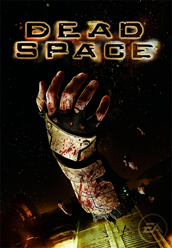
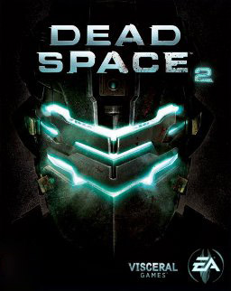
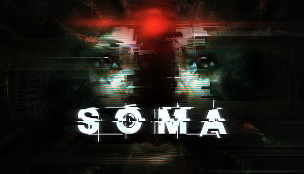
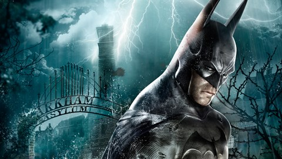

DEAD SPACE (2008)
Isaac Clarke é um engenheiro comum com a missão de consertar uma imensa nave de mineração, a USG Ishimura. Porém, logo vê que há algo terrivelmente errado. Agora sozinho, armado apenas com suas ferramentas e habilidades de engenharia, Isaac apressa-se para desvendar o horripilante mistério do que aconteceu a bordo da Ishimura, na esperança de encontrar Nicole. Preso com criaturas hostis, chamadas necromorfos, Isaac entra em uma batalha pela sobrevivência, não só contra os horrores que o cercam, mas também contra a perda da própria sanidade.
DEAD SPACE 2 (2011)
Dead Space 2 se passa três anos após os acontecimentos do jogo original, agora nos enviando para uma estação espacial chamada Sprawl. Essa estação foi construída ao redor dos fragmentos de uma das luas de Saturno, estando dividida em diversas áreas diferentes, com um tamanho considerável, incluindo até zonas residenciais com escolas, igrejas e lojas. Isaac Clark, protagonista do jogo, agora pode saltar através do espaço, podendo alterar a direção enquanto flutua, e Isaac também vai ter linhas de diálogo, algo raro na primeira versão.
AMNESIA: THE DARK DESCENT
Amnesia: The Dark Descent de 2010 é um survival horror em primeira pessoa, que te coloca em um ambiente de terror, levado pela bagunça que foi criada na sua mente. Você não sabe onde está e não lembra de nada antes de chegar onde está. Sinta a sensação de estar sendo caçado neste pesadelo que se tornou sua vida.
SOMA
Em SOMA assumimos o controle de Simon Jarret, um jovem canadense que perdeu a namorada em um acidente de trânsito. A batida deixou uma sequela grave que causa hemorragias no cérebro do rapaz, um problema que cedo ou tarde vai acabar com sua vida. Sem muito o que fazer, ele aceita participar da pesquisa de dois cientistas que descobriram uma nova forma de escanear e literalmente gravar a mente das pessoas em computadores a fim de cura-las de suas doenças.
RESIDENT EVIL 4
Leon S. Kennedy, um dos sobreviventes do incidente de Raccoon City, foi recrutado como agente, respondendo diretamente ao presidente dos Estados Unidos. Com a experiência de várias missões nas costas, Leon é enviado para resgatar a filha sequestrada do presidente. Ele a rastreia até uma vila europeia isolada, onde há algo terrivelmente errado com os aldeões. E a cortina se abre nessa história de um ousado resgate e horror de sobrevivência extenuante.
BIOSHOCK
O primeiro BioShock se passa em 1960, na cidade submersa de Rapture. O local foi originalmente planejado e construído em 1940, por Andrew Ryan, com o objetivo de preparar a utopia máxima para a elite da sociedade, um lugar onde todos poderiam viver em paz e longe do restante do mundo.
BATMAN: ARKHAM ASYLUM
Com um misterioso incêndio em Blackgate, vários prisioneiros foram transferidos para o Asilo Arkham, onde Batman havia acabado de prender diversos criminosos como Victor Zsasz e o Espantalho.[1] Chegando com o Coringa após ele novamente tentar aterrorizar a cidade, o Palhaço do Crime mostrou que havia planejado tudo e começou um motim dentro do manicômio. Batman agora está preso e tem que lutar contra seus piores inimigos para poder sobreviver.
BATMAN: ARKHAM CITY
Após o incidente no Asilo Arkham, a enorme Arkham City foi construída para alojar todos os criminosos de Gotham City. Bruce Wayne começa uma campanha contra tal prisão e é preso dentro dela, e de lá, ele deve descobrir o que Hugo Strange está planando e o que seria o Protocolo 10.
ALIEN: ISOLATION
O jogo é baseado na série de filmes de terror de ficção científica Alien, e acontece quinze anos após os eventos do filme original Alien de 1979, seguindo a engenheira Amanda Ripley, filha da protagonista Ellen Ripley de Alien, enquanto ela investiga o desaparecimento de sua mãe.
LAYERS OF FEAR
Layers of Fear apresenta a história de um pintor atribulado, com uma vida sem rumo e cheia de conflitos. Ele está tentando terminar uma pintura, que ele considera ser sua obra-prima e que ele espera que ao completá-la consiga colocar sua vida em ordem e se livrar de todos os demônios que habitam em sua mente. A história do jogo não é jogada de bandeia para o jogador, ela se mostra aos poucos através das pinturas, documentos e nas alucinações que assombram o pintor.
VISAGE
Em Visage você será o personagem Dwayne, um homem misterioso assombrado por entidades malignas do passado. Ao se aventurar em uma casa surreal, ele aprende as histórias que o vinculam a esse horrível lugar. Seu objetivo é descobrir a verdade por trás disso tudo e encontrar coragem para ir mais fundo. O jogo também adiciona à sua jogabilidade um sistema interessante onde é necessário controlar o seu nível de estresse.
ALAN WAKE
Na história do primeiro game, Alan Wake é um escritor de muito sucesso. Em 2010, depois de escrever o último livro da série protagonizada pelo detetive Alex Casey, Alan teve um bloqueio criativo e foi com sua esposa até a pacata cidade de Bright Falls com o intuito de espairecer. Ao invés de receberem a chave para a acomodação correta, uma mulher estranha encaminhou o casal para uma pequena cabana em Cauldron Lake. Depois disso, tudo dá errado e coisas estranhas começam a acontecer. O que era pra ser uma viagem de descanso começa com o pé esquerdo.
OUTLAST

O inferno é um experimento do qual não há escapatória em Outlast, um jogo de terror de sobrevivência em primeira pessoa da Red Barrels. Como o jornalista investigativo Miles Upshur, explore o Mount Massive Asylum e tente sobreviver tempo o bastante para descobrir seu terrível segredo... se tiver coragem.
PREY
A história se passa no futuro em uma história alternativa e acompanha Morgan Yu, um pesquisador na estação espacial Talos 1 que precisa combater os alienígenas hostis Typhoon depois deles escaparem de seu confinamento.